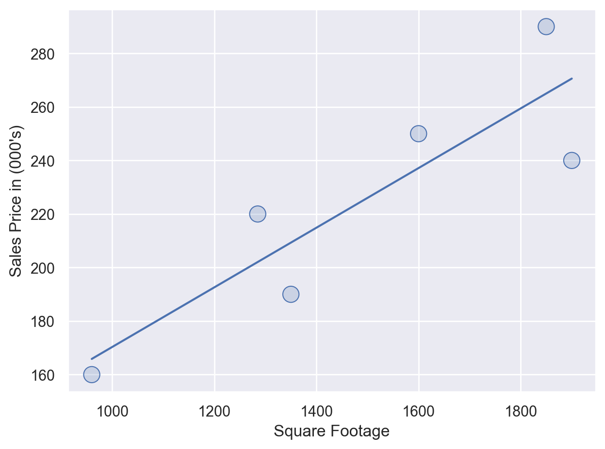
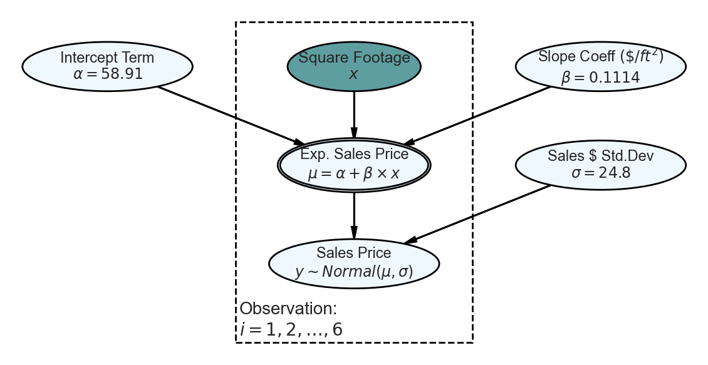
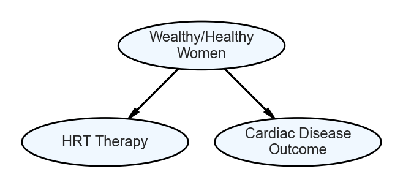

## make two data arrays representing observations
## of six home sales
salesPrice = [160, 220, 190, 250, 290, 240]
sqFootage = [960, 1285, 1350, 1600, 1850, 1900]Interpretable Data Models
Understanding the Why Behind Data-Driven Predictions
🔍 Interpretable Data Models
The Core Idea
A data model is a function that represents how variables relate. In data science, models can take different functional forms:
Direct Mappings
\(f: X \rightarrow Y\), turning inputs into outputs.
Example: Linear regression predicting house prices from square footage.
Probability Distributions
\(p(X,Y)\), describing how variables co-vary and with what uncertainty.
Example: Bayesian networks modeling disease symptoms and causes.
What is Interpretability?
One-Liner Definition
An interpretable data model is a function (like \(f(X)\) or \(p(X,Y)\)) whose structure is simple enough that humans can understand the relationships it encodes.
Expanded Definition
All models are functions, but their form varies. Sometimes they are explicit mappings from features to predictions (e.g., linear regression). Other times they are joint distributions over variables that describe uncertainty and dependencies (e.g., Bayesian networks).
An interpretable data model is one where this function is transparent enough that people can trace the “why” behind its outputs. This usually means:
- Clear structure: easily understood relationships (e.g., additive terms, decision rules)
- Human-scale parameters: coefficients, thresholds, or conditional probabilities that make intuitive sense
- Traceable reasoning: the ability to explain how a prediction or conclusion was reached
Interpretability vs Explainability
Interpretability
Definition: The degree to which a model’s internal structure, parameters, and decision-making process can be understood by humans without requiring additional explanation tools.
Focus: Built-in transparency of the model itself.
Explainability
Definition: The ability to provide clear, causal reasoning for why a model made a specific prediction, including the relative importance of different input features and the logical steps in the decision process.
Focus: Post-hoc analysis and explanation of model decisions.
Key Point: True explainability requires causal understanding—not just correlation. A good explanation answers “What would happen if we changed this input?” not just “What inputs were associated with this output?”
The Causal Reasoning Challenge
Correlation vs. Causation in Explanations
Most “explanations” from data models are actually just descriptions of correlations. True explainability requires causal reasoning:
- Correlational explanation: “Maternal Tylenol use during pregnancy is associated with autism diagnosis in children”
- Causal explanation: “Maternal symptoms X, Y, and Z during pregnancy lead to both increased Tylenol use and increased autism risk in the child.”
The difference matters for actionability and trust.
Why It Matters
The Core Benefits
- Trust: Users and stakeholders can validate and believe results
- Actionability: Insights can be acted on because the logic is clear
- Debuggability: Problems can be identified and corrected
- Ethics: Transparency helps detect bias and unintended consequences
The Problem with Black Boxes
“The problem is that a single metric, such as classification accuracy, is an incomplete description of most real-world tasks.” - Doshi-Velez and Kim (2017)
When it comes to data modeling, you have to make a trade-off: Do you just want to know what is predicted? Or do you want to know why the prediction was made and possibly pay for the interpretability with a drop in predictive performance?
Key Reasons for Interpretability
Human Curiosity & Learning
Humans have a mental model of their environment that is updated when something unexpected happens. This update is performed by finding an explanation for the unexpected event.
Example: A human feels unexpectedly sick and asks, “Why do I feel so sick?” They learn that they get sick every time they eat those red berries. They update their mental model and decide that the berries caused the sickness.
Scientific Discovery
In many scientific disciplines, there is a change from qualitative to quantitative methods, and also towards data-driven modeling. The goal of science is to gain knowledge, but many problems are solved with big datasets and complex statistical models.
The model itself becomes the source of knowledge instead of the data. Interpretability makes it possible to extract this additional knowledge captured by the model.
Safety & Testing
Data models take on real-world tasks that require safety measures and testing.
Example: A self-driving car automatically detects cyclists based on a computer vision system. You want to be 100% sure that the abstraction the system has learned is error-free because running over cyclists is very bad.
Bias Detection
By default, data models pick up biases from the training data. This could make your models discriminate against underrepresented groups.
Interpretability is a useful debugging tool for detecting bias in data models.
When Do We NOT Need Interpretability?
Low-Impact Scenarios
Interpretability is not required if the consequences of being wrong are minimal or acceptable.
Example: Sarah’s personal Spotify playlist predictor that suggests songs she might like based on her listening history. There’s no real problem if the model is wrong (at worst just a song she skips).
Well-Studied Problems
Some applications have been sufficiently well studied so that there is enough practical experience with the model.
Example: Statistical models for optical character recognition that process images of envelopes and extract addresses. These systems have been in use for many years, and it’s clear that they work.
Gaming Prevention
Interpretability might enable people or programs to manipulate the system.
Example: Facebook’s content ranking algorithm where users might manipulate their posts to game the system if they know which features affect visibility in their friends’ feeds.
What Makes a Good Explanation?
Characteristics of Human-Friendly Explanations
Contrastive
Humans usually don’t ask why a certain prediction was made, but why this prediction was made instead of another prediction.
Example: For a house price prediction, the house owner might be interested in why does this beautiful house seem so cheap?
Selected
People don’t expect explanations that cover the actual and complete list of causes of an event. We are used to selecting one or two causes from a variety of possible causes as THE explanation.
What it means for data modeling: Make the explanation short, give only 1 to 3 reasons, even if the world is more complex.
Audience-focused
Explanations are part of a conversation or interaction between the explainer and the receiver of the explanation.
Example: Explaining cryptocurrencies to a technical person vs. to your grandmother would be completely different.
Focus on Abnormal
People focus more on abnormal causes to explain events. These are causes or effects that were not expected but nevertheless happened.
Example: Viagra was originally developed as a heart medication, but researchers discovered its unexpected side effect during clinical trials. This “abnormal” outcome became the primary explanation for the drug’s success, overshadowing its original intended purpose.
Truthful
Good explanations prove to be true in reality (i.e., in other situations).
Example: GPS satellites need to account for time dilation effects from Einstein’s theory of relativity. While Newtonian physics worked well for centuries, it became inadequate for GPS precision. The satellites’ clocks run faster in orbit due to weaker gravity, and this relativistic effect would cause GPS to be off by about 11 kilometers per day if not corrected.
For data modeling: The explanation should predict the event as truthfully as possible, which in data modeling is sometimes called fidelity.
Consistent with Prior Beliefs
Humans often judge arguments by whether the conclusion fits their beliefs, rather than whether both their assumptions and their the reasoning are logically valid. This is called the belief bias effect.
Classic experiment (Evans, Barston & Pollard, 1983): Participants evaluated syllogisms like:
Premise 1: All mammals can walk.
Premise 2: Whales are mammals.
Conclusion: Whales can walk.
Although the conclusion is logically valid, it is completely unbeleivable. Despite this, approximately 50% of participants would judge conclusions like this as true.
The dark side: While belief consistency makes explanations more “human-friendly,” it’s arguably not very friendly to our future as a society. We’re essentially designing systems that reinforce existing biases rather than challenging them.
Implication for data modeling: Users may dismiss explanations from a model if they contradict their existing mental models, even when the model is correct. Conversely, users may accept explanations that align with their beliefs, even when the model is wrong or the reasoning is flawed.
Example: Loan Approval Model
Let’s consider a practical example of interpretability in action:
The Problem
A bank uses a statistical model to approve or reject loan applications. The model performs well on test data, but applicants (and regulators) want to understand why decisions are made.
Without Interpretability
- Applicant: “Why was my loan rejected?”
- Bank: “The model said no.”
- Result: Frustration, lack of trust, potential discrimination
With Interpretability
- Applicant: “Why was my loan rejected?”
- Bank: “Your application was rejected because your debt-to-income ratio is 45% (our threshold is 40%) and you have two recent late payments. If you can reduce your debt-to-income ratio to below 40% and maintain on-time payments for 6 months, you would likely be approved.”
- Result: Clear guidance, trust, actionable steps
Legal Requirements for Interpretability
Banks Must Provide Interpretability
Equal Credit Opportunity Act (ECOA) - Requires lenders to provide “adverse action notices” that explain why credit was denied, including the specific reasons for the decision.
This means that in your loan example, the bank legally cannot just say “The model said no.” They must provide interpretable explanations of the decision factors.
Examples
Interpretable Models
- Linear regression: Clear coefficients and additive structure
- Decision trees: Simple if-then rules
- Simple Bayesian models: Transparent conditional probabilities
- Rule-based systems: Explicit logical statements
Less Interpretable Models
- Deep neural networks: Complex non-linear transformations
- Ensemble models: Random forests, gradient boosting (without explanation tools)
- Support vector machines: High-dimensional transformations
- Complex statistical models: Many interactions and non-linearities
In Short
Interpretability means models aren’t just accurate — they’re understandable.
Linear Regression as Canonical Interpretable Model Example
BuildIt Inc. flips houses - they buy houses to quickly renovate and then sell. Their specialty is building additions on to existing houses in established neighborhoods and then selling the home at prices above their total investment. BuildIt’s decision to move into a neighborhood is based on how sales price fluctuates with square footage. If sales price seems to increase by more than $120 per additional square foot, then they consider that neighborhood to be a good candidate for buying houses. BuildIt is eyeing a new neighborhood and records the square footage and prices of some recent sales transactions.
Here is the python code that creates a dataframe with BuildIt’s data (note: salesPrice is in thousands of dollars):
Visually, we can confirm what appears to be a linear relationship between square footage and sales prices by creating a scatterplot with a linear regression line drawn in blue:

BuildIt is interested in the slope of this line which gives the estimated change in mean sales price for each unit change in square footage. For BuildIt, they want to know if this slope is above $120 per square foot because at that price point the firm is confident it can make money?
Letting,
\[ \begin{aligned} x_i \equiv &\textrm{ The square footage for the } i^{th} \textrm{ house.} \\ y_i \equiv &\textrm{ The observed sales price, in 000's, for the } i^{th} \textrm{ house.} \\ \alpha \equiv &\textrm{ The intercept term for the regression line.} \\ \beta \equiv &\textrm{ The slope coefficient representing change in expected price per square footage.} \\ \mu_i \equiv &\textrm{ The expected sales price, in 000's, for any given square footage where } \\ & \hspace{0.2cm} \mu_i = E(y_i | x_i) \textrm{ and } \mu_i = \alpha + \beta \times x_i. \end{aligned} \]
the linear regression output can be extracted code in R or python. We will not worry about the coding details here. In the below code output, the first element of the returned array is \(\beta\), the slope coefficient for how price changes per square foot and the second element of the array is \(\alpha\) typically referred to as the y-intercept.
import numpy as np
np.polyfit(x = sqFootage, y = salesPrice, deg = 1)array([ 0.1114099, 58.9064047])Based on the output, the following linear equation is the so-called “best” line:
\[ \mu_i = 58.91 + 0.1114 \times x_i \]
The model suggests, assuming its assumptions are justified, that BuildIt can anticipate being able to sell additional square footage for about $111 per square foot (i.e. \(1000* \beta\) because price is in 000’s). This would not earn them acceptable profit as it is less than $120 per square foot. However, with only 6 data points, there is obviously going to be tremendous uncertainty in this estimate.
Visualizing the Linear Model as a Generative DAG
From previous coursework, you are probably familiar with simple linear regression equation expressed mathematically. This model can be visually expressed as a generative model with the assumption that our observed data is normally distributed around some line of expected sales prices. Let’s use the following notation to describe the line:
\[ \mu_i = \alpha + \beta x_i \]
where,
\[ \begin{aligned} x_i &\equiv \textrm{The value of an explanatory variable for the } i^{th} \textrm{ observation.} \\ \alpha &\equiv \textrm{ The intercept term for the line.} \\ \beta &\equiv \textrm{ The slope coefficient for the line.} \\ \mu_i &\equiv \textrm{ The expected value (or mean) for the } i^{th} \textrm{ observation.} \end{aligned} \]
Using a generative DAG, ?@fig-lineDag presents a graphical version of simple linear regression.

The statistical model of the generative DAG in ?@fig-lineDag, let’s digest the implied narrative. Starting at the bottom:
- Sales Price Node(\(y\)): We observe Sales Price data where each realization is normally distributed about an Expected Sales Price, \(\mu\).
- Expected Sales Price Node(\(\mu\)): Each realization \(\mu\) is actually a deterministic function of this node’s parents. Graphically, the double perimeter around the node signals this. This expectation varies with each observation. The only way this can happen is that it has a parent that varies with each observation; namely Square Footage.
- Square Footage Node(\(x\)): The Square Footage is our model input (as noted by the darker fill); we just take the observed data as given.
- All other yet-to-be discussed nodes are outside the Observations plate. Therefore, each prediction from the model will use a constant value for each of these nodes. The node we are most interested in is Slope Coeff, \(\beta\), as this is as an estimate of how home prices change when Build-It adds square footage. Intercept just sets some base-level home value and Price Std. Dev. gives a measure of how much home prices vary about the calculated expected price, \(\mu\).
Further Reading (optional)
For a nice companion guide to interpretable machine learning methods and techniques, see:
Molnar, C. (2023). Interpretable Machine Learning: A Guide for Making Black Box Models Explainable. Available at: https://christophm.github.io/interpretable-ml-book/
EXAMPLES
HRT Therapy and Cardiac Disease Example
This example demonstrates how interpretable data models can help us understand complex relationships in medical data, particularly around hormone replacement therapy (HRT) and cardiac disease outcomes.
The Scenario
Consider a study examining the relationship between hormone replacement therapy (HRT) and cardiac disease in women. A key challenge in this type of analysis is understanding the causal pathways and potential confounding variables.
The DAG Model
The following DAG illustrates the relationships between wealthy/healthy women, HRT therapy, and cardiac disease outcomes:

Interpreting the DAG
The DAG in ?@fig-hrtDag shows two important relationships:
- Wealthy/Healthy Women → HRT Therapy: Women who are wealthy and healthy are more likely to receive HRT therapy. This could be due to:
- Better access to healthcare
- More proactive health management
- Ability to afford treatments
- Wealthy/Healthy Women → Lower Cardiac Disease: Women who are wealthy and healthy have lower rates of cardiac disease. This relationship exists independently of HRT therapy and could be due to:
- Better overall health status
- Access to preventive care
- Healthier lifestyle factors
- Socioeconomic advantages
Why This Matters for Interpretability
This example illustrates a classic confounding scenario where:
- Correlation ≠ Causation: Simply observing that HRT users have lower cardiac disease rates doesn’t mean HRT causes the reduction
- Confounding Variable: Wealthy/healthy status is a confounder that affects both HRT usage and cardiac outcomes
- Interpretable Models Help: By explicitly modeling these relationships in a DAG, we can:
- Identify potential confounding variables
- Design studies that control for these factors
- Make more accurate causal inferences
- Avoid spurious conclusions
Key Takeaway
Interpretable models like DAGs help us move beyond simple correlations to understand the underlying causal structure of complex relationships. This is essential for making sound medical and policy decisions based on data analysis.
“The most compelling analysts unify narrative, math, and code.”
Social Acceptance
The process of integrating machines and algorithms into our daily lives requires interpretability to increase social acceptance.
Example: Our vacuum cleaner “DustBot” gets stuck. As an explanation for the accident, DustBot tells us that it needs to be on an even surface. This creates shared meaning and trust.